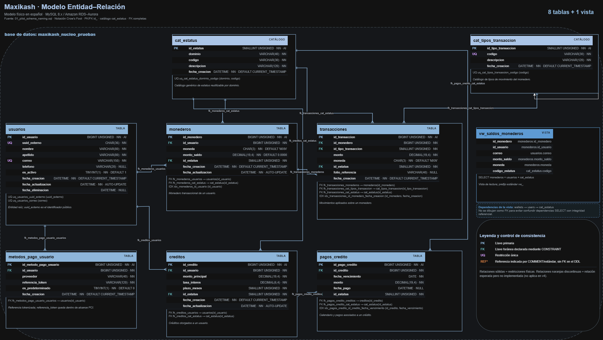
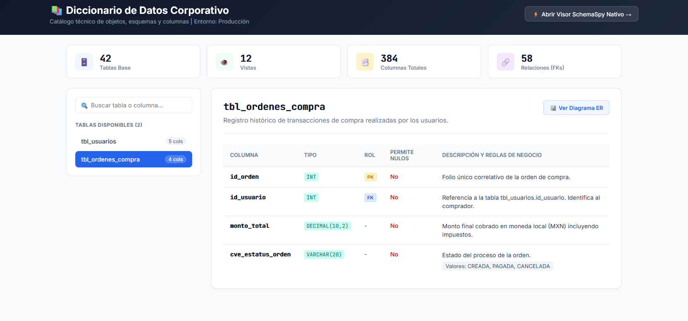

Estándar de nombrado, modelo de datos, control de cambios, reversa, auditoría y gobernanza para las bases de datos MySQL de Maxikash
Para garantizar que cada equipo mantenga autonomía en su tecnología sin romper el contrato de datos, se establece la frontera formal entre la base de datos y la capa de aplicación:
| Capa | Responsable | Convención / Alcance |
|---|---|---|
| Modelo físico (BD, tablas, columnas, SPs) | Arquitecto de Datos / DBA | snake_case, español técnico. Acceso solo vía SPs o vistas. |
| Acceso a datos / ORM / DTOs | Back-End | Libre elección (camelCase / DTOs). Mapea UUIDs y firma de SPs. |
| Contratos de API (JSON) | Back-End | Expone exclusivamente uuid_externo — nunca IDs numéricos. |
| Consumo de la API | Front-End / Móvil | Sin interacción directa con la base de datos. |
El identificador uuid_externo actúa como el desacoplamiento clave: la base maneja autoincrementables eficientes internamente, mientras Back-End expone identificadores seguros y universales en sus APIs.
Modelo físico de la base de pruebas maxikash_nucleo_pruebas, incluyendo el identificador público y las columnas de auditoría base.

Cada tabla de negocio tiene dos llaves con propósitos distintos: id_<entidad> es la llave interna, autoincremental, de uso exclusivo de la base de datos — nunca se expone fuera de ella. uuid_externo es el identificador público: lo genera la propia base al insertar (no la aplicación) y es el único que Back-End/Front-End deben consumir.
Adicionalmente, toda tabla de negocio incluye trazabilidad obligatoria de creación y modificación (creado_por / actualizado_por).
CREATE TABLE usuarios ( id_usuario BIGINT UNSIGNED NOT NULL AUTO_INCREMENT COMMENT 'PK interna, nunca se expone fuera de la base', uuid_externo CHAR(36) NOT NULL DEFAULT (UUID()) COMMENT 'Identificador publico, unico, consumido por Back-End/Front-End', ... creado_por VARCHAR(80) NULL COMMENT 'Usuario o servicio que crea el registro', actualizado_por VARCHAR(80) NULL COMMENT 'Usuario o servicio del ultimo cambio', fecha_creacion DATETIME NOT NULL DEFAULT CURRENT_TIMESTAMP COMMENT 'Fecha de alta del registro', fecha_actualizacion DATETIME NOT NULL DEFAULT CURRENT_TIMESTAMP ON UPDATE CURRENT_TIMESTAMP COMMENT 'Fecha del ultimo cambio', CONSTRAINT uq_usuarios_uuid_externo UNIQUE (uuid_externo) ) COMMENT='Usuarios registrados en la plataforma Maxikash';
El COMMENT de cada tabla y cada columna no es opcional: es el insumo directo que lee el diccionario de datos automatizado (ver sección 09). Una tabla o campo sin COMMENT aparece en el diccionario sin descripción.
Toda entidad y objeto dentro de MySQL debe responder a reglas estrictas de lenguaje, prefijos y relaciones:
snake_case, minúsculas, sin acentos ni carácteres especiales (ñ).usuarios, monederos).ENGINE=InnoDB siempre (soporta transacciones y FKs).La PK de usuarios se llama id_usuario. Cualquier tabla que la referencie usa exactamente ese mismo nombre para su columna FK. Así se identifica la relación al instante:
CREATE TABLE monederos ( id_monedero BIGINT UNSIGNED NOT NULL AUTO_INCREMENT COMMENT 'PK interna', id_usuario BIGINT UNSIGNED NOT NULL COMMENT 'FK -> usuarios.id_usuario, mismo nombre que la PK referenciada', ... CONSTRAINT fk_monederos_usuarios FOREIGN KEY (id_usuario) REFERENCES usuarios (id_usuario) );
| Objeto | Prefijo / Patrón | Ejemplo |
|---|---|---|
| Tabla de negocio | tbl_ | tbl_monederos |
| Tabla de catálogo | cat_ | cat_estatus |
| Vista | vw_ | vw_saldos_monederos |
| Procedimiento almacenado | sp_ | sp_nucleo_ins_usuario |
| Trigger | trg_ | trg_monederos_after_update_audit |
| Función | fn_ | fn_creditos_calcular_mensualidad |
| Llave foránea constraint | fk_<tabla>_<tabla_ref> | fk_monederos_usuarios |
| Índice único constraint | uq_<tabla>_<columna> | uq_usuarios_correo |
| Índice normal índice | idx_<tabla>_<cols> | idx_transacciones_id_monedero_fecha |
fk_, uq_ e idx_ nombran el constraint o índice — nunca la columna. La columna FK se llama igual que la PK que referencia, sin prefijo (ver el ejemplo de arriba). Ejemplo completo: la columna es id_usuario, y el constraint que la declara como llave foránea se llama fk_monederos_usuarios.
Toda la lógica de escritura y procesos complejos pasa por Stored Procedures estandarizados bajo 5 plantillas principales:
Los SPs de escritura responden con una firma unificada de 4 parámetros OUT para que Back-End interprete los resultados de manera transparente:
CREATE PROCEDURE sp_monedero_upd_estatus ( IN p_id_monedero BIGINT UNSIGNED, IN p_codigo_estatus VARCHAR(30), IN p_usuario_ejecutor VARCHAR(80), -- audita quién solicita la acción OUT p_exito TINYINT(1), -- 1 = Exitoso, 0 = Error OUT p_codigo_salida VARCHAR(30), -- ej: MONEDERO_NO_EXISTE OUT p_mensaje VARCHAR(150), OUT p_uuid_publico VARCHAR(36) )
Cada tipo de objeto de base de datos tiene su propia carpeta dentro del repositorio. Esto separa responsabilidades y permite que cualquier integrante del equipo sepa exactamente dónde ubicar o crear un objeto — la convención es genérica y aplica a cualquier base de datos del equipo, no solo a Maxikash.
<repositorio>/ ├── tablas/ -- Esquema completo (tablas de negocio) ├── catalogos/ -- Catálogos de dominio y tablas de gobernanza ├── vistas/ -- Vistas creadas de aquí en adelante ├── procedimientos_almacenados/ -- Arquetipos y Stored Procedures ├── funciones/ -- Funciones de utilería (reservada) ├── triggers/ -- Disparadores de auditoría y negocio (reservada) ├── eventos/ -- Eventos programados de MySQL (reservada) ├── reversos/ -- Scripts de rollback por cada folio ├── datos/ │ ├── cargas_iniciales/ -- Inserts de datos semilla y catálogos │ └── exportaciones/ -- Queries de consulta para el diccionario ├── documentacion/ │ ├── diseno/ -- Word formal, mockup HTML, diagrama ER │ └── ejecucion/ -- Manuales de despliegue y operación └── marca/ -- Identidad gráfica y logotipos
| Carpeta | Contenido | Tipo de objeto SQL |
|---|---|---|
tablas/ | Esquema completo (tablas de negocio) | CREATE TABLE (+ CREATE VIEW embebidas) |
catalogos/ | Catálogos de dominio y tablas de gobernanza | CREATE TABLE (+ SP/EVENT embebidos) |
vistas/ | Vistas nuevas independientes | CREATE VIEW |
procedimientos_almacenados/ | Arquetipos y Stored Procedures | CREATE PROCEDURE |
funciones/ | Funciones (reservada) | CREATE FUNCTION |
triggers/ | Triggers (reservada) | CREATE TRIGGER |
eventos/ | Eventos programados nuevos | CREATE EVENT |
reversos/ | Script de reverso por cada folio aplicado | DROP / Reverso DDL |
datos/cargas_iniciales/ | Datos semilla y catálogos poblados | INSERT (DML) |
datos/exportaciones/ | Queries para generación de diccionario | SELECT (DQL) |
documentacion/diseno/ | Documentos formales, mockups, ER | — |
documentacion/ejecucion/ | Guías de ejecución en producción | — |
marca/ | Recursos de marca | — |
Las carpetas vistas/, funciones/, triggers/ y eventos/ existen desde ya para que todo objeto nuevo nazca ahí. Los objetos embebidos en el piloto original (como vw_saldos_monederos o el EVENT de drift) se mantienen en sus scripts históricos. Cada carpeta incluye un LEEME.md explicativo.
Ningún cambio al esquema se ejecuta en producción o pruebas sin registrar antes un folio formal. Se rastrea la fecha, responsable, script aplicado y su reverso obligatorio.
Antes de que exista un folio, hay un flujo que lo origina: ningún desarrollador crea una tabla, columna o SP por su cuenta. Toda necesidad pasa por una solicitud simple, se diseña en un solo lugar (Arquitecto de Datos / DBA), y regresa como un SP ya construido y listo para usar.
| Folio | Tipo | Qué cambia |
|---|---|---|
MXK-DEV-20260824-001 | DDL | Esquema piloto original — 8 tablas + vista |
MXK-DEV-20260826-001 | DDL | Identificador público + columnas de auditoría |
MXK-DEV-20260826-002 | Trigger | 11 disparadores que alimentan la auditoría |
MXK-DEV-20260826-003 | SP | Arquetipos v3 — reciben quién ejecuta el cambio |
Todo script DDL/DML que aplica un cambio tiene, como requisito de aprobación, un script espejo en la carpeta reversos/ que revierte exactamente sus efectos sin dejar residuos.
| Cambio (forward) | Script de reverso (reversos/) |
|---|---|
tablas/01_pilot_schema_naming.sql | reversos/rb_20260826_001_uuid_auditoria.sql |
triggers/08_audit_triggers.sql | reversos/rb_20260826_002_audit_triggers.sql |
procedimientos_almacenados/04_sp_archetypes.sql | reversos/rb_20260826_003_sp_v3.sql |
Un reverso no reescribe el cambio "a mano": deshace únicamente lo que el script forward agregó, en orden inverso, y siempre usando cláusulas IF EXISTS para poder ejecutarse de forma segura incluso si ya se corrió antes.
Ejemplo 1 · folio MXK-DEV-20260826-001 — agrega uuid_externo y columnas de auditoría a usuarios.
ALTER TABLE usuarios ADD COLUMN uuid_externo CHAR(36) NOT NULL DEFAULT (UUID()), ADD COLUMN creado_por VARCHAR(80) NULL, ADD COLUMN actualizado_por VARCHAR(80) NULL, ADD CONSTRAINT uq_usuarios_uuid_externo UNIQUE (uuid_externo);
ALTER TABLE usuarios DROP INDEX IF EXISTS uq_usuarios_uuid_externo, DROP COLUMN IF EXISTS uuid_externo, DROP COLUMN IF EXISTS creado_por, DROP COLUMN IF EXISTS actualizado_por; -- Repetir para: monederos, transacciones, creditos, -- pagos_credito, metodos_pago_usuario
Ejemplo 2 · folio MXK-DEV-20260826-002 — crea el trigger de auditoría en usuarios.
CREATE TRIGGER trg_usuarios_after_insert_audit AFTER INSERT ON usuarios FOR EACH ROW INSERT INTO auditoria_cambios ( tabla_afectada, operacion, snapshot_nuevo ) VALUES ( 'usuarios', 'INSERT', JSON_OBJECT('id_usuario', NEW.id_usuario) );
DROP TRIGGER IF EXISTS trg_usuarios_after_insert_audit; DROP TRIGGER IF EXISTS trg_usuarios_after_update_audit; DROP TRIGGER IF EXISTS trg_monederos_after_update_audit; -- ... resto de los 11 triggers del folio
Ningún folio se marca como aprobado si su script de reverso no se probó en el ambiente de pruebas — aplicar el forward, correr el rollback, y confirmar que la base queda idéntica al estado previo.
La documentación del modelo no es un archivo estático en Excel; se genera directamente desde la base de datos mediante metadatos vivos en information_schema, apoyada en los COMMENT obligatorios de tabla y columna descritos en la sección 03.
datos/exportaciones/05_data_dictionary_export.sql consulta information_schema.TABLES y information_schema.COLUMNS — trayendo tipo de dato, nulabilidad, llave y el COMMENT de cada campo.catalogos/registro_tablas, que aporta la capa de gobernanza: dominio de negocio, equipo dueño, clasificación PII/PCI y folio de creación de cada tabla.registro_tablas: dominio, dueño y nivel PII/PCI
Para la toma de decisiones con Dirección de TI y Liderazgo de Desarrollo, se presenta el balance transparente entre el valor técnico aportado y la curva de adaptación operativa requerida:
| Ventajas (Beneficio de Negocio y Técnico) | Retos y Mitigación |
|---|---|
Desacoplamiento Total: El uso de uuid_externo permite refactorizar la base interna o cambiar de motor sin romper las APIs de Back-End. |
Curva de Aprendizaje: El equipo debe acostumbrarse a no usar DELETE físico y pasar las modificaciones por SPs.Mitigación: Arquetipos estándar listos para reutilizar. |
| Seguridad y Cumplimiento: Manejo explícito de datos sensibles (PII/PCI) y auditoría nativa sobre quién creó/modificó cada dato. | Rigor en Despliegues: Requiere redactar y validar el script de reverso (rollback) por cada folio liberado. Mitigación: Plantillas estructuradas en la carpeta reversos/. |
Precisión Financiera: El uso obligatorio de DECIMAL(19,4) elimina descuadres o desbordamientos por redondeo de flotantes en saldos y pagos. |
Mayor número de objetos: Gestión de triggers, eventos y SPs adicionales. Mitigación: Organización en repositorio estructurado (ver sección 06). |
| Cero Despliegues Fallidos: El protocolo de Smoke Testing y la idempotencia garantizan estabilidad en los entornos de Pruebas y Producción. | Gobernanza activa: Necesidad de monitoreo constante contra tablas huérfanas. Mitigación: Detección automatizada vía Eventos MySQL y scripts DQL. |
| Diccionario de datos vivo para toda la empresa: Analytics, Producto y nuevos desarrolladores consultan una sola fuente actualizada, sin depender de documentos sueltos o del conocimiento tácito de quien creó la tabla. | Adopción cultural: Requiere que el equipo mantenga los COMMENT y la clasificación PII/PCI al día en cada cambio.Mitigación: actualizar registro_tablas es un paso obligatorio del checklist de folio. |
| Auditorías y cumplimiento más rápidas: La clasificación PII/PCI y el dueño de cada tabla, ya documentados, agilizan revisiones de seguridad y cumplimiento normativo. | Cobertura inicial limitada: El catálogo de gobernanza hoy cubre solo las tablas del piloto. Mitigación: el evento de detección de drift alerta automáticamente sobre tablas nuevas sin registrar. |